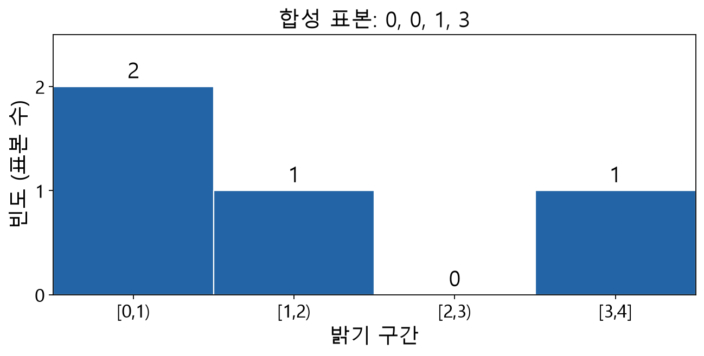

공개 타입
zvision.HistogramSpec: 패키지 __all__ 공개 이름입니다. 선언 출처: zvision._naming_preprocessing.HistogramSpec.
Uniform bin count and inclusive value bounds.

판독 기준
- 빈도의 합은 표본 수 4입니다.
- 구간 경계 처리와 실제 함수 계약을 구분합니다.
합성 표본과 NumPy 계산으로 빈도와 구간 경계를 설명합니다. SDK 함수의 실제 범위와 상한 포함 여부는 연결된 HistogramSpec의 계약을 따릅니다.
HistogramSpec(bins: int, lower: float, upper: float) -> None인자 선언
bins· POSITIONAL_OR_KEYWORD · 타입<class 'int'>· 기본값 없음lower· POSITIONAL_OR_KEYWORD · 타입<class 'float'>· 기본값 없음upper· POSITIONAL_OR_KEYWORD · 타입<class 'float'>· 기본값 없음
반환 타입 주석: None
시그니처와 설명에 없는 반환값, 오류, 제약 조건은 확인되지 않았습니다. 환경별 네이티브 지원 여부와 예제 실행은 별도 검증이 필요합니다.
HistogramSpec(<class 'int'>, <class 'float'>, <class 'float'>) 생성자 설명
공개 멤버
데이터 필드
| 필드 | 타입 | 기본값 | 의미와 조건 |
|---|---|---|---|
bins | int | 필수 | 균등 히스토그램의 빈 수입니다. |
lower | float | 필수 | 균등 히스토그램의 포함 하한입니다. |
upper | float | 필수 | 균등 히스토그램의 포함 상한입니다. |
균등 빈의 범위
HistogramSpec은 균등 히스토그램의 bins, 포함 하한 lower와 포함 상한 upper를 지정합니다. 빈 수와 값 범위를 함께 정해야 각 빈이 어떤 입력 값 구간에 해당하는지 해석할 수 있습니다. 빈 개수만 같은 두 결과는 범위가 다르면 직접 비교하기 어렵습니다.
구간 계산
예를 들어 하한 0과 상한 100 사이를 10개 균등 빈으로 나눈다면 명목상 구간 폭은 (100-0)/10=10입니다. 양 끝 경계는 포함으로 정의되어 있으므로 경계값이 실제 어느 빈에 들어가는지는 해당 히스토그램 연산의 분류 규칙을 확인해야 합니다.
입력과 결과
설정한 범위와 빈 수로 계산한 HistogramResult는 채널별 빈을 2차원 튜플로 보관합니다. 각 채널의 빈을 원본 픽셀 형식 및 선택 영역과 연결해 읽습니다. 입력이 범위 밖에 있을 때의 처리는 호출별 계약을 따릅니다.
적용 조건
밝기 값의 범위나 보정 스케일이 바뀌면 같은 bins 설정의 분포도 달라집니다. 비교할 영상의 값 단위를 통일하고 lower와 upper, 채널 순서와 선택 ROI를 함께 기록하면 결과를 재현하기 쉽습니다.